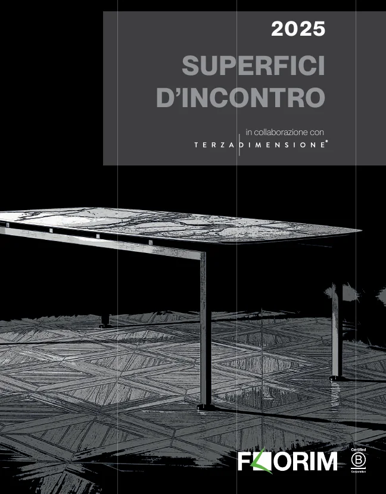

Olivieri
Hector
Merkezdeki metal bağlantı ahşap taşıyıcıyla birleşir; 12 mm Florim seramik tablası projeye göre kişiselleştirilebilir.

MOBİLYA / MASA TASARIMI · 02 / 04
Florim × Terzadimensione
Florim’in seramik plakalarını Terzadimensione’nin mobilya uzmanlığıyla bir araya getiren tasarım masaları koleksiyonu.
Florim’in resmî sayfasını inceleyinSERİ / TASARIM YAKLAŞIMI
Superfici d’incontro; Florim’in seramik plakalarını Terzadimensione’nin mobilya tasarımıyla buluşturuyor. Hector, Ambrogio, Mr Big ve Alfred gibi modeller; ahşap ya da metal yapılarla, farklı mekânlara ve kullanımlara göre tasarlanmış masa çözümleri sunuyor.
Florim’in resmî koleksiyon sayfasında tasarımlar Olivieri, TD Studio, Claudio Valentino Design ve başka mobilya tasarımcılarıyla eşleştiriliyor. Bazı modeller iç mekân, bazıları ise korunaklı veya soft outdoor kullanımı için tarif ediliyor. Yüzey, modelin formuna ve proje tercihine göre kişiselleştirilebiliyor.
SUPERFICI D’INCONTRO / MODEL SEÇKİSİ
Florim seramik yüzeyleri ve Terzadimensione mobilya tasarımı, iç ve dış mekân kullanımlarına yönelik farklı masa modellerinde buluşuyor.
Olivieri
Merkezdeki metal bağlantı ahşap taşıyıcıyla birleşir; 12 mm Florim seramik tablası projeye göre kişiselleştirilebilir.
Olivieri
İki ölçü seçeneği ve açılır tabla sistemi sunar. Meşe kaplamalı taşıyıcı, Florim yüzeyle tamamlanır.
Olivieri
Yumuşak hatlı tablası, ikonik yuvarlatılmış kenar formunu seramik yüzey detayıyla buluşturur.
Olivieri
Dış mekân masa ve bank çözümüdür; metal taşıyıcı, ahşap detaylar ve porselen taş kaplamalı yüzeylerden oluşur.
Olivieri
Mr Big’in eliptik formunu ve kesik konik ayağını yeniden yorumlar; 12 mm seramik tabla biçimlendirilmiş kenarla sunulur.
Olivieri
Çapraz taşıyıcı yapıyı, farklı biçim ve yüzeylerde seramik tablalarla bir araya getirir.
TD Studio
Geometrik taşıyıcılı dış mekân tasarımıdır; 12 ve 20 mm tabla seçenekleri bulunur.
TD Studio
Kolon biçimli ayağıyla tanımlanır; 160 × 320 cm’ye kadar ve 20 mm kalınlıkta tabla seçenekleri sunar.
TD Studio
İnce metal iskelet ve 12 mm Florim seramik tablayla hafif bir görünüm oluşturur.
Claudio Valentino Design
Geometrik taşıyıcıyı ince metal ayaklar ve farklı biçimlerdeki tablalarla birleştiren yalın tasarım.
Claudio Valentino Design
Seramik tablayı taşıyan metal bağlantı detayları tasarımın görünür bir parçası olur; farklı tabla biçimleri ve yüzeyler sunulur.
Claudio Valentino Design
Heykelsi ve keskin geometrili tabanı 12 mm seramikle tamamlanır; ayaklar da seramikle kaplanabilir.
LATOxLATO Design
20 mm seramik elemanlardan oluşan konik taban, uyumlu veya kontrast renklerle farklı geometrilerde tasarlanır.
Pier Luca Freschi Design
Dengeli, düz çizgileri 12 mm Florim seramik tabla ile buluşturur.
TD Studio
Hafif doğrusal taşıyıcı, yumuşak biçimli 12 mm tabla ve kanat profilli kenar detayıyla tamamlanır.
SUPERFICI D’INCONTRO / TASARIM KATALOĞU
Florim ve Terzadimensione iş birliğiyle hazırlanan Superfici d’incontro kataloğunu inceleyin.
Kataloğu yeni sekmede aç
FLORIM / GÖRSEL SEÇKİSİ
Resmî Florim görselleri. Görseli seçerek büyütebilirsiniz.
BEKAMAR / FLORIM
Superfici d’incontro hakkında ürün ve proje bilgisi için Bekamar ekibine ulaşın.
Bekamar ile iletişime geç